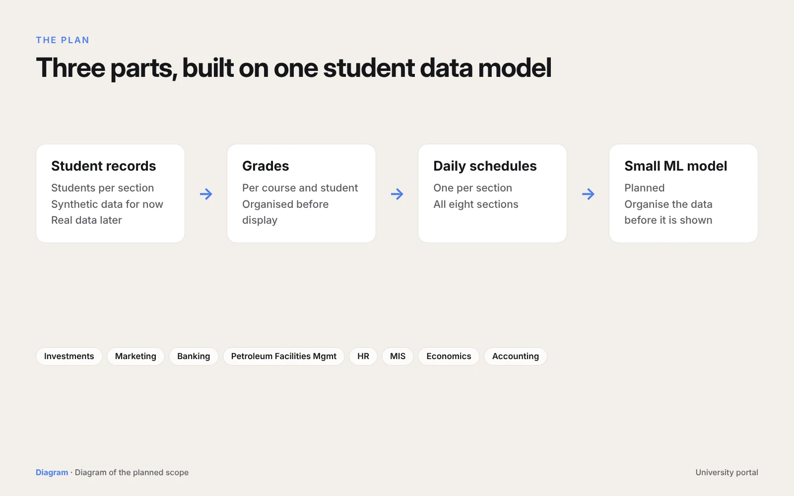

One site for eight sections
The department has eight sections: Investments, Marketing, Banking, Petroleum Facilities Management, HR, MIS, Economics and Accounting. Each one needs its students, their grades and a daily schedule in one place.
Three parts, one data model
- 01Student recordsStudents per section, starting with a synthetic dataset while the site is built.
- 02GradesPer course and per student, organised before they're shown.
- 03Daily schedulesOne for each of the eight sections.
- 04A small ML modelPlanned, to organise the data before it appears on the site.
Work in progress
The site is still being built, so there's no public demo yet. This page will be updated with screenshots when there is.
Tools I used
WebData modellingPythonMachine learning (planned)
A closer look
